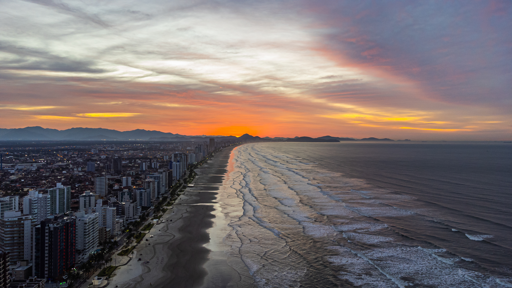
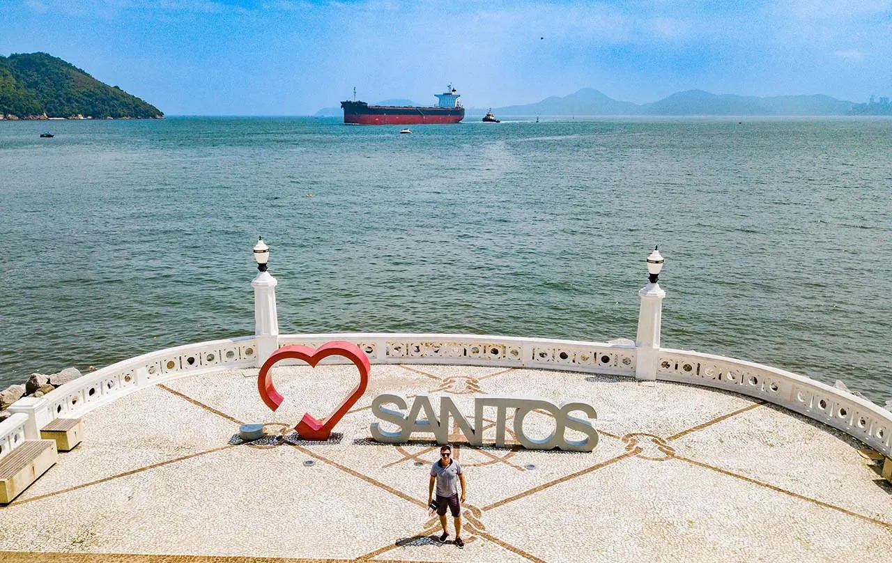
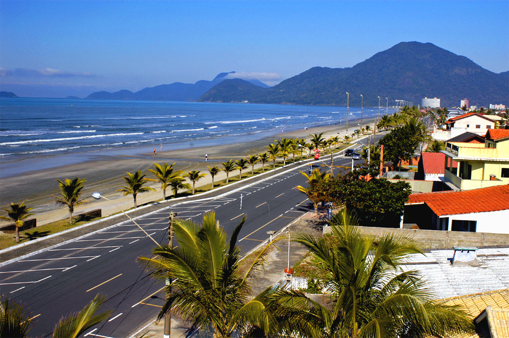
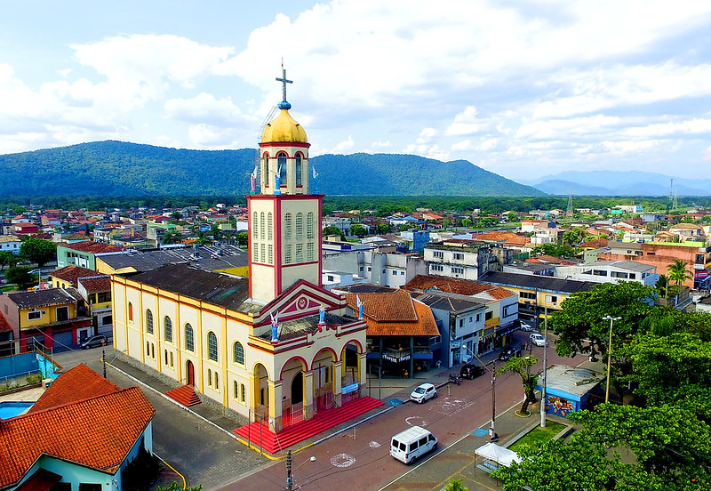
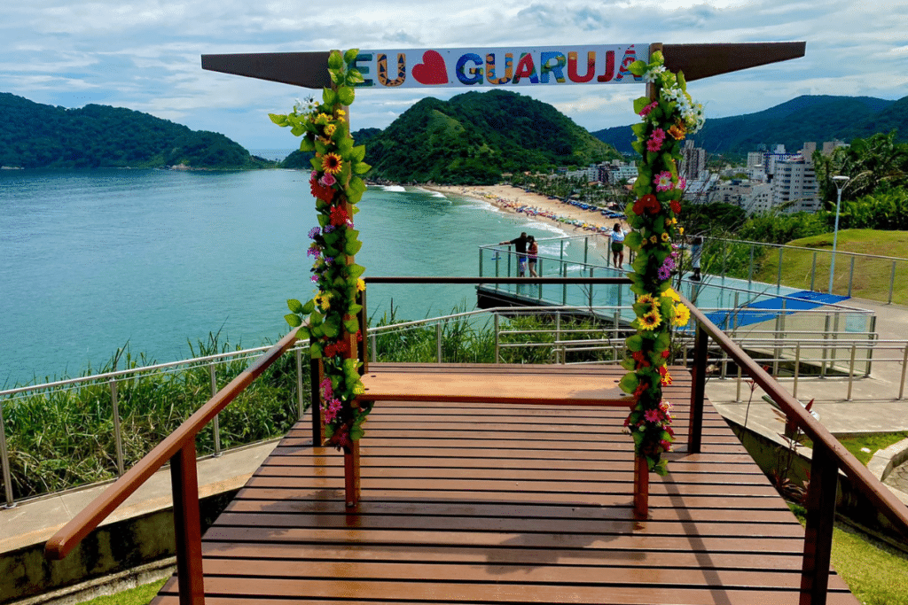
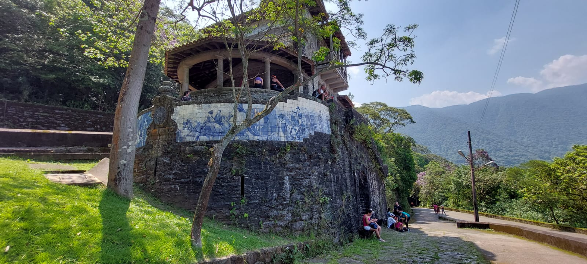
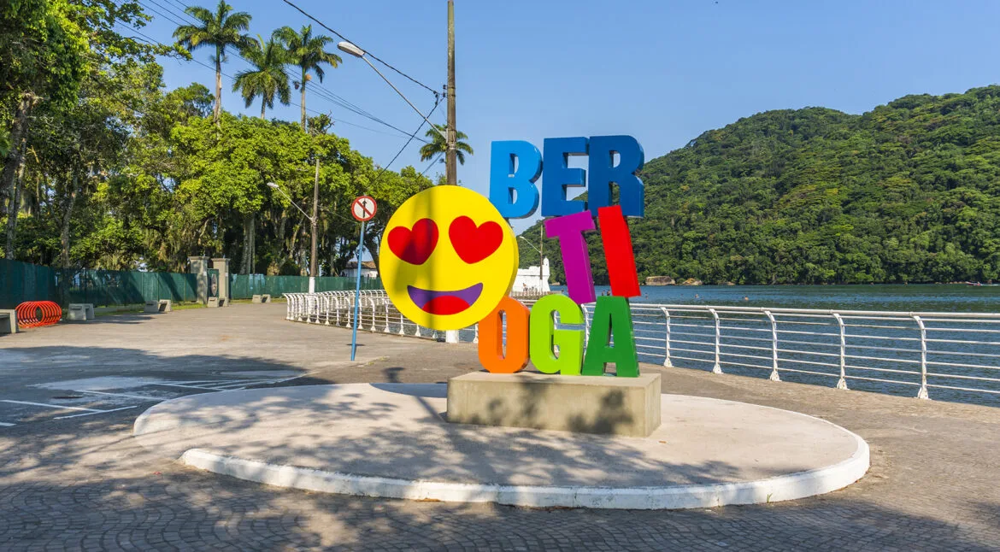
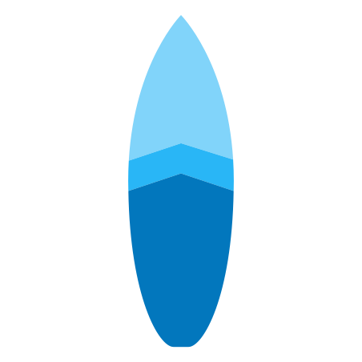

wave 013
Navegue pelo litoral paulista!
Entre na onda e
Surfe pelas nossas cidades!
-

Praia Grande
Orla extensa, ciclovias modernas e uma das praias mais organizadas da região.
-

Santos
História, porto movimentado e o famoso maior jardim de orla do mundo.
-
São Vicente
A primeira cidade do Brasil, com tradição histórica e belas paisagens.
-

Peruíbe
Natureza preservada, praias tranquilas e acesso à Estação Ecológica da Juréia.
-

Mongaguá
Clima calmo, pesca tradicional e o maior plataforma de pesca da América Latina.
-

Itanhaém
Rica em história colonial, rios e praias com cenários únicos.
-

Guarujá
Conhecida como Pérola do Atlântico, com praias paradisíacas e vida noturna ativa.
-

Cubatão
Importante polo industrial cercado pela Serra do Mar e áreas de preservação.
-

Bertioga
Destino de natureza e aventura, com trilhas, rios e praias preservadas.

